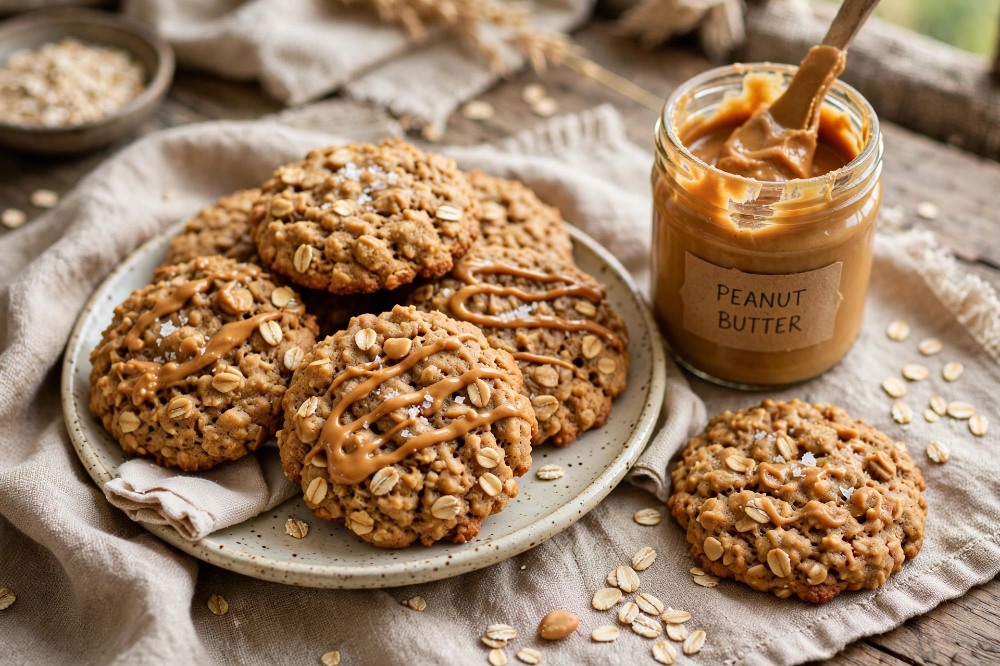

Peanut Butter Oatmeal Cookies

Ingredients
- 1 cup peanut butter
- 1 cup packed brown sugar
- 1 large egg
- 1 teaspoon vanilla
- 1 cup rolled oats
- 1/2 teaspoon baking soda
- A pinch of salt
Steps
- Heat the oven to 350°F.
- Stir the peanut butter, sugar, egg and vanilla together until smooth.
- Fold in the oats, baking soda and salt.
- Roll into walnut-sized balls and flatten slightly on a lined tray.
- Bake 10 to 12 minutes. They will look underdone. Take them out anyway.
- Let them sit on the tray for five minutes before moving them.